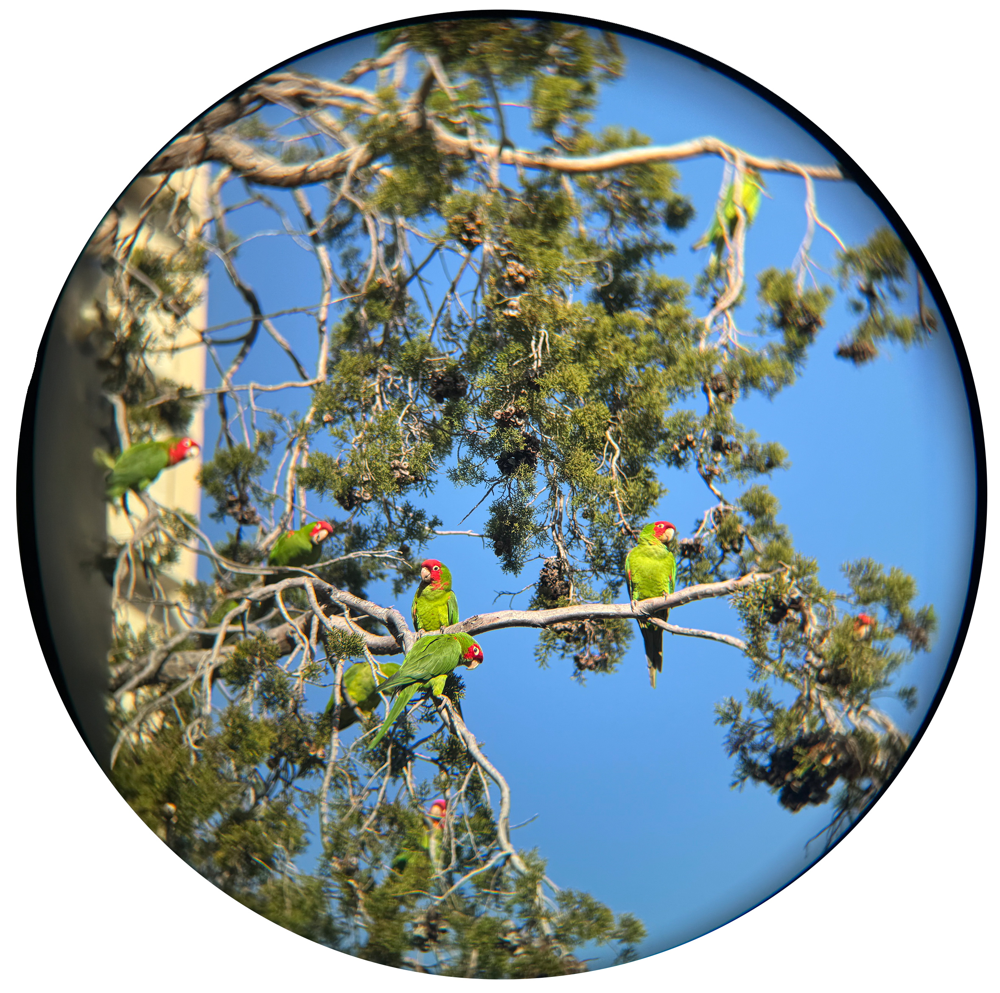
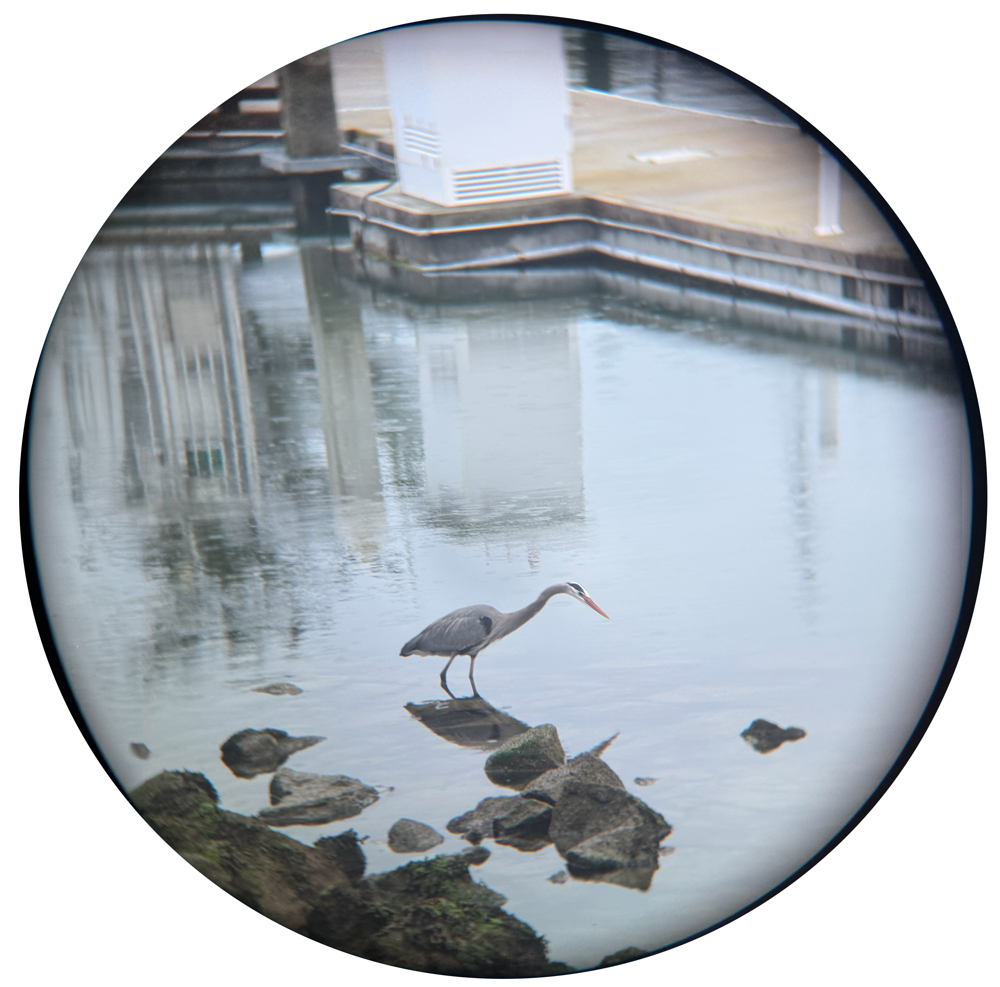
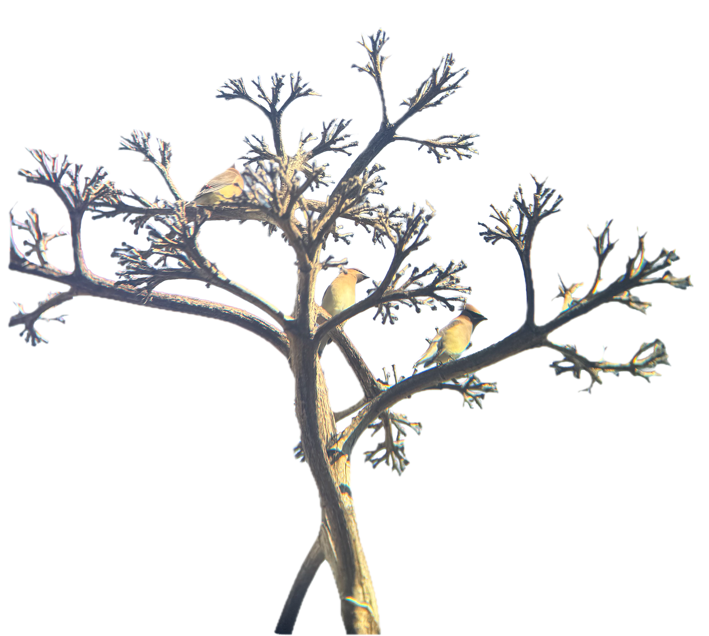

Birds are everywhere — in city parks, along the shoreline, even outside your window. They come in all shapes, sizes, and colors, each with its own story and secret habits. This section is your field guide to noticing, understanding, and appreciating the birds of San Francisco. Whether you’re a complete beginner or just curious, you’ll find tips, sketches, and insights to make every birding moment a little more magical.
Birding is all about slowing down and noticing the world around you. You don’t need fancy gear. Just patience, curiosity, and a willingness to watch and listen.
Binoculars make it easier to see details from a distance, and apps like Merlin Bird ID can help you identify birds on the spot. Local bird pamphlets and field guides are also great for learning shapes, colors, and calls. Start in a nearby park, follow movement in the trees, and let your eyes and ears guide you. Every sighting is a little discovery.
learn more with the Merlin Bird ID appClick on the button below to learn more about birds in San Francisco
